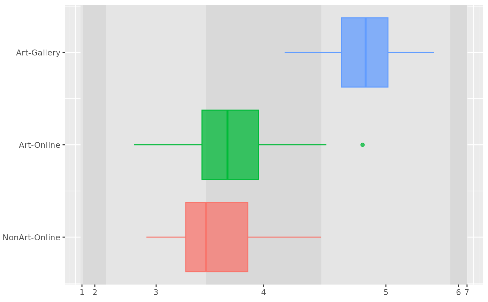
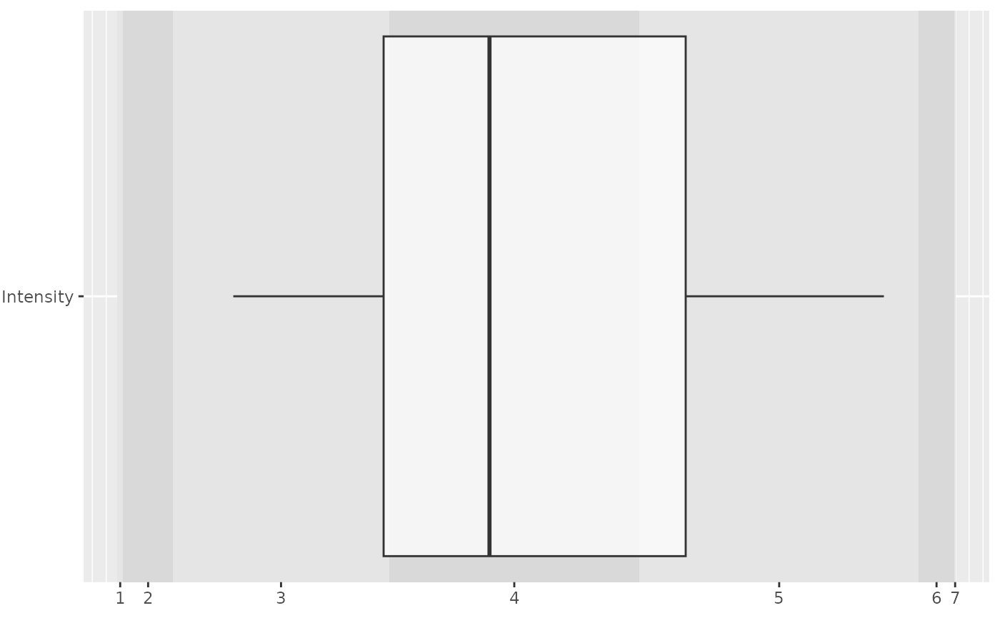

Plot estimated intensity as box plots
plot_intensity.RdPlot estimated intensity as box plots
Usage
plot_intensity(
df,
intensity,
cutpoints,
group = NULL,
fill_interval = c("gray90", "gray85"),
x_labels_pos = "bottom"
)Arguments
- df
Table with estimated response intensity
- intensity
Variable for estimated response intensity
- cutpoints
Vector with estimated cut points
- group
Variable for grouping for data or
NULLif there is only a single estimate- fill_interval
Fill colors for stripes that indicate intervals.
- x_labels_pos
Either
"bottom"(default) or"top". The latter is useful for combined plots.
Examples
data("aiq")
data("aiq_draws")
# extract estimated intensity
intensity_df <- parse_stan_posterior_array(aiq_draws, a, list("Group" = levels(aiq$Group)))
intensity_df[["Intensity"]] <- inv_logit(intensity_df[["Value"]])
# extract cutpoints
cutpoints <- inv_logit(colMeans(extract_stan_posterior_matrix(aiq_draws, cutpoints)))
plot_intensity(intensity_df, Intensity, cutpoints, group = Group)

# ignoring grouping
plot_intensity(intensity_df, Intensity, cutpoints)
